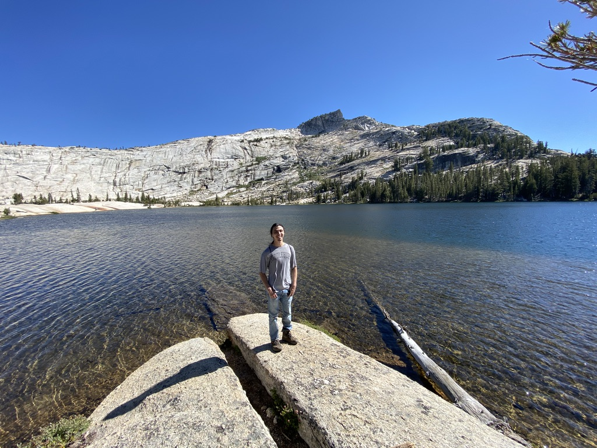

David Keating
I am currently a Van Vleck visiting assistant professor at UW Madison in the probability group. My postdoc advisor is Vadim Gorin. I am interested in statistical mechanics of two-dimensional lattice models, integrable probability, and combinatorics.
In 2021, I recieved my Phd in mathematics from UC Berkeley. My advisor was Nicolai Reshetikhin. The title of my thesis was "Limit shapes in two-dimensional lattice models arising from physics and combinatorics". It recieved a 2021 Herb Alexander Prize from the Berkeley math department.
CV
Contact
- Email: (first initial)(last name)3@wisc.edu
- Office: 407 Van Vleck
Papers and preprints
- Asymptotics of Bounded Lecture-Hall Tableaux, with Z. Li and I. Prause.
- Shuffling algorithm for coupled tilings of the Aztec diamond, with M. Nicoletti.
- Colored vertex models and k-tilings of the Aztec diamond, with S. Corteel and A. Gitlin.
- A vertex model for supersymmetric LLT polynomials, with A. Gitlin.
- Equivalences of LLT polynomials via lattice paths.
- A vertex model for LLT polynomials, with S. Corteel, A. Gitlin, and J. Meza.
- Area statistics of large oscillating tableaux.
- Integrability of limit shapes of the inhomogeneous six vertex model, with N. Reshetikhin and A. Sridhar.
- Arctic curves phenomena for bounded lecture hall tableaux, with S. Corteel and M. Nicoletti.
- Conformal limit for dimer models on the hexagonal lattice, with N. Reshetikhin and A. Sridhar.
- Random tilings with the GPU, with A. Sridhar.
Gallery of Simulations
A gallery of simulations of the six vertex model, tilings, etc.
Teaching
At UW Madison:
- Fall 2022, Spring and Fall 2023: Instructor for Math 632 "Introduction to Stochastic Processes."
- Spring 2022: Instructor for Math 475 "Introduction to Combinatorics."
- Fall 2021: Instructor for Math 431 "Introduction to Probability."
At UC Berkeley:
- Spring 2020: GSI for Math 128A "Numerical Analysis."
- Spring 2019: GSI for Math 54 "Linear Algebra and Differential Equations."
- Fall 2018: GSI for Math 54 "Linear Algebra and Differential Equations."
- Fall 2017: GSI for Math 53 "Multivariable Calculus."
- Spring 2017: GSI for Math 53 "Multivariable Calculus."
- Fall 2016: GSI for Math 54 "Linear Algebra and Differential Equations."
- Spring 2016: GSI for Math 1B "Calculus II."
- Fall 2015: GSI for Math 1A "Calculus I."
Slides
Some slides from my talks:
Miscellaneous
- A library for generating random tilings with Markov chain Monte Carlo on the GPU.